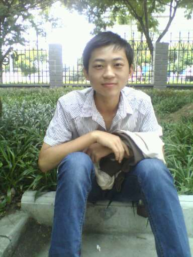

欢迎大家浏览本人做的第一个网页，这是我第一次做一个完整的网页，由于水平有限，页面做得很粗糙，望老师见谅。
我叫刘海朋，湖北红安人，现在是计算机科学学院计专11201班的一名大三学生。我不像别的男孩那样经常打游戏或者热爱运动，我更倾向于安安静静地看看书，看看电影，听听歌。我现任班级的团支书，曾获”校级一等奖“、”校级三好学生“、院级青协”优秀志愿者“等荣誉。我喜欢和大家打成一片，交更多的朋友。
大学三年中，我各方面的能力都得到了发展，可以说，经过大学三年的学习，我已经具备了适应社会工作的能力。这学期即将画上了句号，就毕业了。回首往事，至少可以自信地说一声“我没有虚度”。
在思想上，我要求上进，一直以乐于助人为已任，多次参加青年志愿者活动。尊敬师长，团结同学，为自己的学习和生活创造了良好的环境。在学习上，我刻苦努力，孜孜不倦，争取着大学那美好的时光去学习。大学三年，不光使我学到了许多知识，也使我懂得了学习的方法。正是利用这种方法，在除学校开设的课程外，我还自学了网络数据库、网页制作、平面设计等知识，很好地充实了自己的业余生活，并为自己的将来打下良好的基础。到目前为止，我已掌握了本专业的基础知识和有关网络的基本知识。除此之外，对计算机的爱好让我对计算机有一定的了解，并具有一定的编程能力。 工作方面，我参与了校学生社区的建设与维护工作，使它成为同学们喜爱的校内站点之一。目前正在参与校远程教育的建设实践的经验让我在巩固已有知识的同时，更激起我强烈的学习欲望，让我不断进取，不断提高。
在生活上，我生活俭朴，有着广泛的兴趣爱好。多多参加实践活动不断丰富和完善自己。 将来的工作是对我知识的检验，也是对我人生的挑战。我会在工作中不断地完善自己，提高自己，适应工作的需要。所以我希望找一份与自身知识结构相关的工作，如网络出版、多媒体制作、印前处理，可以有更大的空间来证明自己，发展自己！